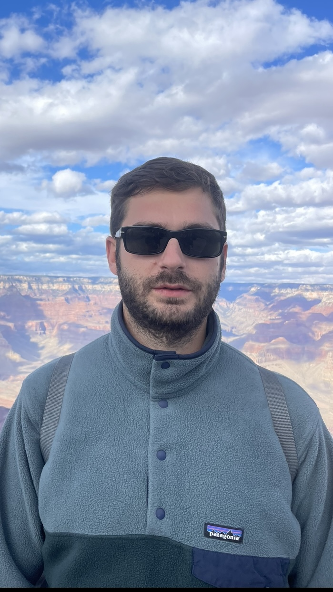
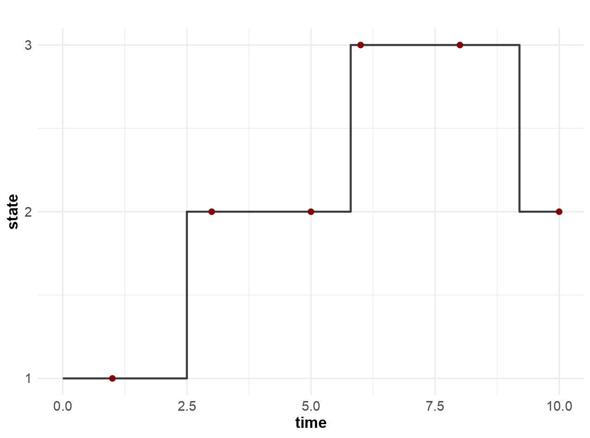
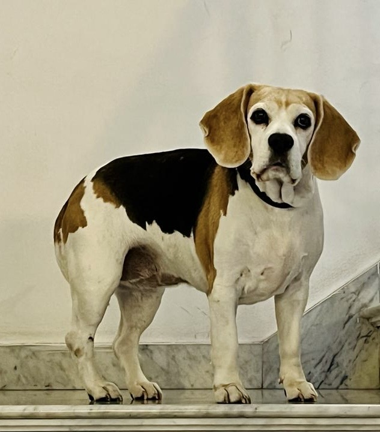
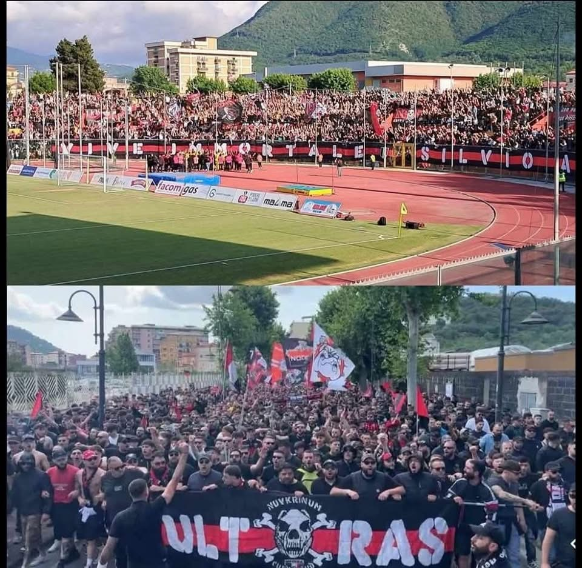

Rosario Barone
Assistant Professor (RTT, Tenure-Track) of Statistics
Department of Statistical Sciences
Università Cattolica del Sacro Cuore
rosario.barone@unicatt.it
Largo Fra Agostino Gemelli, 1, 20123 Milan, Italy
Short Bio
I hold a PhD in Statistics (2020) from Sapienza University of Rome. I held postdoctoral positions in Statistics, first at Sapienza University of Rome and then at the University of Rome Tor Vergata, where I served as an Assistant Professor from March 2023 to June 2025. Since July 2025, I have been a tenure-track Assistant Professor at the Department of Statistical Sciences, Faculty of Economics, Università Cattolica del Sacro Cuore, Milan. My academic journey also includes international experience as a Visiting PhD Student at the University of Plymouth, UK (2018), and as a Visiting Assistant Professor at the University of California, Los Angeles, USA (2025).
Research
My research focuses on methodological statistics and adopts a Bayesian perspective to develop efficient methods for flexible and interpretable models suited to complex phenomena. In particular, it addresses the following topics:
Bayesian Inference for Latent and Multi-State Processes
I work on Bayesian methods for continuous-time multi-state processes, such as semi-Markov and inhomogeneous Markov models, both under partial or irregular observation and with latent state structures. My research focuses on strategies to improve inference through data augmentation and efficient simulation techniques.
Point Processes and Temporal Dependence
I am interested in modeling recurrent events and time-dependent phenomena using point processes, with a focus on latent dynamics and interactions between events over time.

Bayesian Nonparametrics
I study clustering approaches based on Bayesian nonparametric models, with a particular interest in Random Partition Models (RPMs). These models allow for flexible inference on the number and composition of clusters by placing a prior directly on the space of partitions, rather than fixing the number of clusters a priori. My research is primarily devoted to the development of novel models and implementation of efficient computational strategies for posterior inference.
Copulas and Dependence Structures
I explore flexible models for multivariate dependence, including Bayesian formulations of copula models and vine copula constructions. My research pays particular attention to the role of covariates and non-exchangeable structures in defining joint behavior across dimensions.
High-Dimensional Bayesian Modeling and Variable Selection
I work on Bayesian models for high-dimensional data, with a focus on variable selection and regularization through structured priors. I am particularly interested in how prior assumptions affect model performance when covariates are correlated or redundant.
Publications
Please refer to my profiles for a complete list:
Latest Publications
- R. Barone and A. Tancredi (2026). Dirichlet process multi-state mixture models , Computational Statistics & Data Analysis.
- R. Barone and A. Farcomeni (2025). Latent class multi-state quantile regression with a cure fraction: application to jail recidivism in the USA , Journal of the Royal Statistical Society: Series A.
Under Review
- R. Barone, F. Bartolucci, A. Farcomeni and S. Pandolfi. Multilayer dynamic stochastic block models for analyzing international arms trade patterns.
- R. Barone, B. Lucey, A. Palma. Biodiversity Commitment and Market Volatility in Emerging Markets: Evidence from a Bayesian Semiparametric Approach.
Teaching
A.Y. 2025/2026
- Statistical Modelling (R programming) (EN) – Master's Degree in Economics, Università Cattolica del Sacro Cuore (Milan)
- Time Series and Spatial Data Analysis (Exercises and R programming) (EN) – Master's Degree in Data Analytics for Business, Università Cattolica del Sacro Cuore (Milan)
- Statistical Inference (Exercises) (EN) – Master's Degree in Data Analytics for Business, Università Cattolica del Sacro Cuore (Milan)
- Statistica I (R programming) (IT) – All the bachelor’s degree programs of the Faculty of Economics, Università Cattolica del Sacro Cuore (Milan)
A.Y. 2024/2025
- Statistical Tools for Decision Making (EN) – Bachelor Degree in Global Governance, University of Rome Tor Vergata
A.Y. 2023/2024
- Statistical Tools for Decision Making (EN) – Bachelor Degree in Global Governance, University of Rome Tor Vergata
- Biostatistics (EN) – Master in Musculoskeletal and Rheumatologic Physiotherapy, University of Rome Tor Vergata
- Unsupervised Learning (EN) – Master in Data Science for Public Decision Making, University of Rome Tor Vergata
A.Y. 2022/2023
- Statistical Learning (EN) – Bachelor Degree in Global Governance, University of Rome Tor Vergata
- Statistical Inference (EN) – PhD in Data Science, University of Rome Tor Vergata
A.Y. 2021/2022
- Quantitative Methods III (EN) – Bachelor Degree in Business Administration and Economics, University of Rome Tor Vergata
About Ross
I grew up in Nocera — known as Nuvkrinum Alafaternum in Oscan and Nuceria in Latin — a historic city nestled between Naples, Salerno, and the Amalfi Coast. I owe much to Nocera, especially my lifelong friendships and my enduring passion for Nocerina, the local football team that I proudly support.
Beyond statistics, I am passionate about cooking, wine, football (more of an obsession than a passion), nature, and music. But above all, I love dogs — all of them. A special mention goes to Trilli, my little angel wagging her tail among the clouds, and Carlotta, who stole my heart in just a few seconds. I am also deeply committed to civil and social rights, which, sadly, can no longer be taken for granted.



